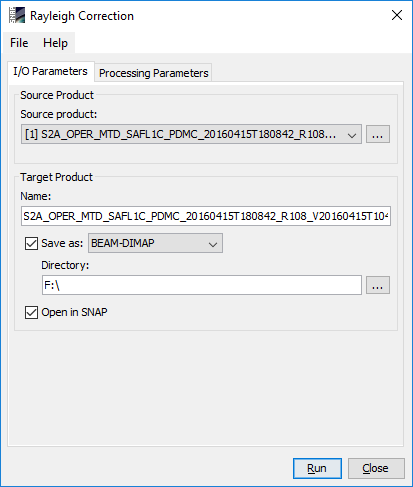
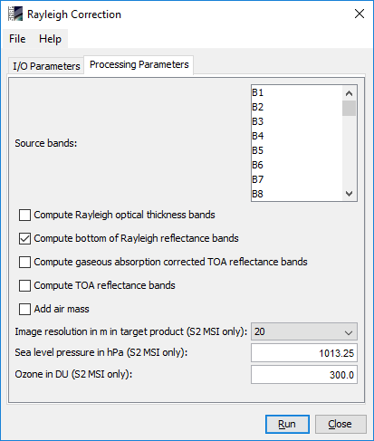

| SNAP Data Processors - Rayleigh Correction Processor - Processor Description | |
In the SNAP desktop application, the Rayleigh Correction processor can be invoked from the SNAP tool menu by selecting the Rayleigh Correction entry from the Optical / Preprocessing menu.
On the command line the Rayleigh Correction processor is available by means of the Graph Processing Tool gpt which is located in the SNAP bin directory. Typing gpt RayleighCorrection -h displays further information.

Source product: Here the user specifies the source product. The combo box presents a list of all products opened in SNAP. The user may select one of these or, by clicking on the button next to the combo box, choose a product from the file system.
Name: Used to specify the name of the target product.
Save as: Used to specify whether the target product should be saved to the file system. The combo box presents a list of available file formats. The text field or the button next to it allow to specify a target directory.
Open in SNAP: Used to specify whether the target product should be opened in SNAP. When the target product is not saved, it is opened in SNAP automatically.

Source bands: The bands in the source product. Select the spectral bands to be Rayleigh corrected. Multiple selection is possible. With this processor, the spectral bands 1-15 for MERIS, 1-21 for OLCI, and 1-9 for S2 MSI can be Rayleigh corrected.
Compute Rayleigh optical thickness bands: Rayleigh optical thickness bands are generated and written to the target product. Default value is false.
Compute bottom of Rayleigh reflectance bands: Bottom of Rayleigh reflectance ('Rayleigh-corrected') bands are generated and written to the target product. Default value is true.
Compute gaseous absorption corrected TOA reflectance bands: Gaseous absorption corrected TOA reflectance bands are generated and written to the target product. Default value is false.
Compute TOA reflectance bands: TOA reflectance bands are generated and written to the target product. Default value is false.
Add air mass: Air mass term is generated and written to the target product. Default value is false.
Image resolution in m in target product (S2 MSI only): The unique image resolution in the target product. Applies for S2 MSI input products only and only if input product is not resampled yet. Source bands having a different resolution are rescaled properly before being Rayleigh corrected. Default value is 20m.
Sea level pressure in hPa (S2 MSI only): Constant sea level pressure in hPa. Applies for S2 MSI input products only. For OLCI and MERIS this information is available from the tie point grids. Default value is 1013.25 hPa.
Ozone in DU (S2 MSI only): Constant ozone value in DU. Applies for S2 MSI input products only. For OLCI and MERIS this information is available from the tie point grids. Default value is 300 DU.